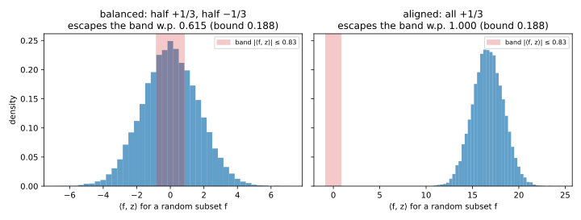
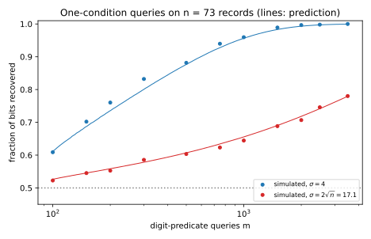

17 Reconstruction attacks
A hospital keeps one sensitive bit per patient, whether they tested positive, and never releases the bits. It only answers counting questions, such as “how many of patients 3, 17 and 42 tested positive?”, and it adds a little noise to every answer. Is that enough? This is the reconstruction game of Threat models and privacy games, where the adversary is scored by the fraction of the secret bits it recovers. One exact count of all \(n\) bits lifts that score only from \(\frac12\) to about \(\frac12 + 1/\sqrt{2\pi n}\), and this chapter asks what many counts do.
The one idea is that every answer is a linear equation in the secret bits, so the error of the answers is the only thing standing between the attacker and the solution. To hide a wrong guess, the error must be as large as the amount by which that guess changes the answers. That amount is about \(\sqrt n\) for a random question and about \(n\) for the question aimed at exactly the wrong bits. Errors well below these scales reveal the bits (Dinur and Nissim 2003), and errors that are independent from answer to answer are averaged away by asking more questions. Dwork and Roth call this the Fundamental Law of Information Recovery: overly accurate answers to too many questions destroy privacy.
The running example is the hospital with \(n = 500\) patients and an attacker who asks \(m = 2000\) random counting questions. With independent normal noise of standard deviation \(0.25\sqrt n = 5.59\) on each answer, a least-squares fit recovers 0.9655 of the bits. Part 3 introduces the definition that defends against these attacks.
17.1 Subset sums and the exponential attack
Before asking how few questions suffice, consider the strongest attacker, who may ask every possible counting question. How large must the error be before even this attacker cannot pin the bits down? This section also sets up the model that every later section shares, in which a list of counting questions is a system of linear equations in the bits.
Definition 17.1 (Subset-sum queries and the curator) The secret database is a bit vector \(d = (d_1, \dots, d_n) \in \{0, 1\}^n\), one bit per person. A subset-sum query is a set \(S \subseteq \{1, \dots, n\}\) of people, written as its indicator vector \(f\), with \(f_i = 1\) when person \(i\) is in \(S\). Its true answer is \[\sum_{i \in S}d_i = \langle f, d\rangle. \tag{17.1}\] The attacker asks \(m\) queries \(f_1, \dots, f_m\), the rows of an \(m \times n\) matrix \(A\). The curator, the party that holds \(d\), returns \(a = Ad + e\), where the error vector \(e\) has one entry per query. The error is at most \(E\) when \(|e_j| \le E\) for every query \(j\).
A wrong guess \(c\) gives answers that differ from the true ones by \(\langle f, c - d\rangle\). Both databases must be within the error of the same answer, so if that difference exceeds twice the error, \(c\) is ruled out.
Definition 17.2 (Consistent candidates and blatant non-privacy) A candidate \(c \in \{0, 1\}^n\) is consistent with the answers if \(|a_j - \langle f_j, c\rangle| \le E\) for every query \(j\). Its number of wrong bits is the Hamming distance \(\mathrm{dist}(c, d)\), the number of people with \(c_i \ne d_i\). A curator is blatantly non-private if some attacker recovers all but \(o(n)\) of the bits, an amount whose ratio to \(n\) goes to 0 as \(n\) grows.
The true \(d\) is always consistent, so an attacker who asks all \(2^n\) queries can output any consistent candidate. The candidate’s wrong bits form two subsets, the ones it missed and the ones it invented, and each subset is itself a query the attacker has asked.
Theorem 17.1 (The exponential attack) Suppose the curator answers all \(2^n\) subset-sum queries with error at most \(E\). Then every consistent candidate \(c\) satisfies \[\mathrm{dist}(c, d) \le 4E. \tag{17.2}\]
Proof.
- Count the ones that the candidate missed. Let \(S_0\) be the set of people with \(d_i = 1\) and \(c_i = 0\). On \(S_0\), \(d\) sums to \(|S_0|\) and \(c\) sums to 0. Both sums are within \(E\) of the one answer to \(S_0\), so by the triangle inequality they are within \(2E\) of each other, and \(|S_0| \le 2E\).
- Count the ones that the candidate invented. On the set \(S_1\) of people with \(d_i = 0\) and \(c_i = 1\), the candidate sums to \(|S_1|\) and \(d\) sums to 0, and the same argument gives \(|S_1| \le 2E\).
- Add. Every disagreement lies in \(S_0\) or in \(S_1\), so \(\mathrm{dist}(c, d) = |S_0| + |S_1| \le 4E\).
The proof never uses that the errors are random, so it holds even against a curator that picks its errors after seeing the attacker’s candidate. Such a curator can attain the bound.
Proposition 17.1 (The bound is attained) Let \(k = \lfloor 2E\rfloor\), and suppose \(d\) has at least \(k\) ones and at least \(k\) zeros. Then some curator with error at most \(E\) on all \(2^n\) queries makes a candidate at distance \(2k\) from \(d\) consistent.
Proof.
- Build the decoy. Let \(c\) flip \(k\) of the ones of \(d\) to 0 and \(k\) of the zeros to 1.
- Its sums stay close to the true ones. For any \(S\), the sum of \(c_i - d_i\) over \(S\) is the number of flipped zeros in \(S\) minus the number of flipped ones in \(S\), so it lies between \(-k\) and \(k\).
- Answer the midpoint. A curator that answers each query with the midpoint of the two databases’ sums is within \(k/2 \le E\) of both, so \(c\) is consistent.
So a curator whose error is \(o(n)\) is blatantly non-private. The attack checks \(2^n\) candidates against \(2^n\) answers, and the next section makes it efficient. A particular curator can also be weaker than the bound suggests: one that rounds every answer to a multiple of 4 has error at most 2, yet simulating the rounding recovers \(d\) exactly (Exercise 1).
Example 17.1 For a hospital of ten patients, \(d = (1, 1, 1, 0, 0, 0, 0, 0, 0, 1)\), the script checks all 1024 candidates against all 1024 subsets. By the midpoint construction, some curator with error at most \(E\) makes \(c\) consistent exactly when every subset sum of \(c - d\) is at most \(2E\) in absolute value (Table 17.1).
| Error \(E\) | 0 | 0.5 | 1 | 1.5 | 2 |
|---|---|---|---|---|---|
| Candidates that survive | 1 | 35 | 242 | 630 | 912 |
| Largest distance to \(d\) | 0 | 2 | 4 | 6 | 8 |
| Bound \(4E\) | 0 | 2 | 4 | 6 | 8 |
The bound is attained at every \(E\), as Proposition 17.1 predicts. At \(E = 2\), 912 candidates survive, and at most 8 wrong bits out of 10 says almost nothing. Figure 17.1 draws both rows over a finer grid of \(E\), for another random database.

17.2 The linear-programming decoder
Asking \(2^n\) questions is not realistic. Dinur and Nissim showed that about \(n\ln n\) random subsets suffice, with an efficient decoder. How large may the error then be? The answer is \(o(\sqrt n)\) instead of \(o(n)\), because a random subset cannot aim at the wrong bits. If a candidate differs from \(d\) in \(k\) places, a random subset picks up each with probability \(\frac12\), so the change in its answer is a sum of about \(k\) random terms, which fluctuates by about \(\sqrt k\), not \(k\).
The decoder relaxes each bit to the interval \([0, 1]\). That turns the search for a consistent candidate into a linear program, a search for a point that satisfies a list of linear inequalities, which linear programming (LP) solves in polynomial time.
Definition 17.3 (Linear-programming decoder) Given the answers \(a\) to \(m\) queries \(f_1, \dots, f_m\) and the error bound \(E\), the linear-programming decoder finds some \(c\) with \[c \in [0, 1]^n \quad\text{and}\quad \big|\langle f_j, c\rangle - a_j\big| \le E \text{ for } j = 1, \dots, m, \tag{17.3}\] and rounds each \(c_i\) to the nearest bit.
The true \(d\) is a solution, and the theorem below shows that no solution has many wrong bits. Its key step needs one random query to catch any difference vector with many large coordinates, by moving its answer far from 0 with constant probability. That is an anti-concentration statement, a lower bound on how often a variable is not close to zero. The proof applies an inequality about the squared answer, which needs the squared answer’s second moment, the answer’s fourth moment, to be small.
So it needs one fact about sums of random signs. Take independent fair signs \(s_i\), each \(+1\) or \(-1\) with probability \(\frac12\), and fixed weights \(w_i\). The sum \(X = \sum_is_iw_i\) has odd moments 0, because flipping every sign leaves its distribution unchanged. Its fourth moment is at most 3 times its squared second moment, as for a normal variable: \[\mathbb E[X^2] = \sum_iw_i^2, \qquad \mathbb E[X^4] \le 3\,\mathbb E[X^2]^2. \tag{17.4}\] Exercise 3 proves the exact value \(3(\sum_iw_i^2)^2 - 2\sum_iw_i^4\) by counting which products of signs survive the expectation.
Markov’s inequality (Theorem 2.1) says that a variable that cannot be negative is rarely far above its mean, and the attack needs the opposite. A variable that is 0 most of the time and huge once in a while is often far below its mean. But its second moment is then enormous next to its squared mean, and the next lemma shows that a small ratio of the two is all that can go wrong.
Lemma 17.1 (Paley–Zygmund inequality) Let \(W \ge 0\) be a random variable with finite second moment, and let \(0 \le \lambda < 1\). Then \[\Pr\big[W > \lambda\,\mathbb E[W]\big] \ge (1 - \lambda)^2\frac{\mathbb E[W]^2}{\mathbb E[W^2]}. \tag{17.5}\]
Proof. The plan is to split the mean of \(W\) between the event and its complement, and to bound the part on the event with Cauchy–Schwarz.
- Split the mean. Write \(B\) for the event \(W > \lambda\,\mathbb E[W]\). Then \(\mathbb E[W]\) is the sum of \(\mathbb E\big[W\mathbf 1[B^c]\big]\) and \(\mathbb E\big[W\mathbf 1[B]\big]\).
- Bound the complement. On the complement \(W \le \lambda\,\mathbb E[W]\), so the first part is at most \(\lambda\,\mathbb E[W]\).
- Bound the event. The Cauchy–Schwarz inequality \(\mathbb E[UV] \le \sqrt{\mathbb E[U^2]\,\mathbb E[V^2]}\), with \(U = W\) and \(V = \mathbf 1[B]\), whose square has mean \(\Pr[B]\), gives \[\mathbb E\big[W\mathbf 1[B]\big] \le \sqrt{\mathbb E[W^2]\Pr[B]}. \tag{17.6}\]
- Solve for the probability. Steps 1 to 3 give \((1 - \lambda)\mathbb E[W] \le \sqrt{\mathbb E[W^2]\Pr[B]}\). Squaring and dividing by \(\mathbb E[W^2]\) gives Equation 17.5.
Now comes the lemma the theorem uses. Think of \(z\) as the difference between a bad candidate and \(d\), with large coordinates of size at least \(\frac13\), the size left after a rounding step in the theorem’s proof.
Lemma 17.2 (One random query catches a bad difference) Let \(z \in \mathbb R^n\) have at least \(\gamma n\) coordinates with \(|z_i| \ge \frac13\), for a fraction \(\gamma\), and let \(f\) be a uniformly random subset, which includes each person independently with probability \(\frac12\). Then \[\Pr\left[|\langle f, z\rangle| > \frac{\sqrt{\gamma n}}{12}\right] \ge \frac{3}{16}. \tag{17.7}\]
Proof. The plan is to apply Lemma 17.1 to the squared answer, with Equation 17.4 supplying its moments, and then to let the large coordinates set the scale. Write \(Y = \langle f, z\rangle\) for the answer, and write the random subset as \(f_i = (1 + s_i)/2\) with independent fair signs \(s_i\).
- Split the sum into a constant and a random-sign part. \(Y = \mu + X\), with the constant \(\mu = \frac12\sum_iz_i\) and the random-sign sum \(X = \sum_is_iz_i/2\), whose weights are \(w_i = z_i/2\).
- Compute the second moment. \(X\) has mean 0, and by Equation 17.4 its variance, written \(\tau^2\), is \(\frac14\sum_iz_i^2\). The cross term \(2\mu X\) has mean 0, so \(\mathbb E[Y^2] = \mu^2 + \tau^2\).
- Bound the fourth moment. In the expansion of \((\mu + X)^4\) the terms with \(\mathbb E[X]\) and \(\mathbb E[X^3]\) vanish, and Equation 17.4 gives \(\mathbb E[X^4] \le 3\tau^4\), which leaves \(\mu^4 + 6\mu^2\tau^2 + 3\tau^4\). Adding \(2\mu^4\) completes the square, so \[\mathbb E[Y^4] \le 3(\mu^2 + \tau^2)^2. \tag{17.8}\]
- Apply Paley–Zygmund. Step 3 makes the ratio \(\mathbb E[Y^2]^2/\mathbb E[Y^4]\) at least \(\frac13\), so Equation 17.5 with \(W = Y^2\) gives \[\Pr\big[Y^2 > \lambda(\mu^2 + \tau^2)\big] \ge \frac{(1 - \lambda)^2}{3}. \tag{17.9}\]
- Drop the mean. Since \(\mu^2 + \tau^2 \ge \tau^2\), the event of step 4 implies \(|Y| > \sqrt\lambda\,\tau\), which therefore has the same lower bound. A non-zero mean only helps, because it pushes \(Y\) away from 0.
- Use the large coordinates. At least \(\gamma n\) coordinates have \(z_i^2 \ge \frac19\), so \(\tau^2 \ge \gamma n/36\) and \(\tau \ge \sqrt{\gamma n}/6\).
- Choose \(\lambda = \frac14\). Then \(\sqrt\lambda\,\tau \ge \sqrt{\gamma n}/12\), and the probability is at least \((3/4)^2/3 = 3/16\), which is Equation 17.7.
A candidate with more than \(\gamma n\) wrong bits survives the decoder only if all \(m\) independent queries fail to catch it, which has probability at most \((13/16)^m\). Rounding the fractional candidates to a grid leaves finitely many, and the union bound handles them all at once.
Theorem 17.2 (Dinur–Nissim, in the form proved here) Fix \(d\), a fraction \(\gamma\) and a failure probability \(\beta\), let \(n \ge 3\), and let the \(m\) queries be independent uniformly random subsets. Suppose the curator’s error is at most \(E\), with \(2E + \frac12 \le \sqrt{\gamma n}/12\), and \[m \ge \frac{n\ln(n + 1) + \ln(1/\beta)}{\ln(16/13)}. \tag{17.10}\] Then with probability at least \(1 - \beta\) over the queries, every solution of the linear program rounds to a vector with at most \(\gamma n\) wrong bits, whatever errors the curator chose.
Proof. The plan is to show that a solution with many wrong bits gives a difference vector that every query fails to catch, and that with enough queries no such vector exists.
- Consistent candidates differ from \(d\) by little on every query. Both \(c\) and \(d\) are within \(E\) of every answer, so by the triangle inequality \(|\langle f_j, c - d\rangle| \le 2E\) for every query \(j\).
- A wrong bit is a large coordinate. Rounding \(c_i\) gives the wrong bit only if \(|c_i - d_i| \ge \frac12\). So more than \(\gamma n\) wrong bits means more than \(\gamma n\) coordinates of \(c - d\) of size at least \(\frac12\).
- Move to a finite set. Round each \(c_i\) to the nearest multiple of \(1/n\), giving a grid point \(c'\). A subset sum adds at most \(n\) coordinates, each moved by at most \(\frac1{2n}\), so it moves by at most \(\frac12\), and \(z' = c' - d\) has \(|\langle f_j, z'\rangle| \le 2E + \frac12\) for every \(j\). It still has more than \(\gamma n\) coordinates of size at least \(\frac12 - \frac1{2n}\), which is at least \(\frac13\) because \(n \ge 3\).
- One grid point passes all queries only with small probability. Fix a grid point whose \(z'\) has more than \(\gamma n\) large coordinates. By Lemma 17.2, each query has \(|\langle f_j, z'\rangle| > \sqrt{\gamma n}/12\) with probability at least \(\frac3{16}\), and by the assumption on \(E\) such a query violates step 3. The queries are independent, so \(z'\) passes all \(m\) of them with probability at most \((13/16)^m\).
- Union bound over the grid. There are at most \((n + 1)^n\) grid points, since each coordinate takes one of \(n + 1\) values. The union bound (Lemma 2.3) says that the probability that one of several events happens is at most the sum of their probabilities. So some bad grid point passes every query with probability at most \((n + 1)^n(13/16)^m\), which is at most \(\beta\) exactly when Equation 17.10 holds.
- Conclude. Outside that event no bad grid point passes, so by step 3 no solution with more than \(\gamma n\) wrong bits exists. The event depends only on the queries, so the guarantee holds for every curator at once.
So error \(o(\sqrt n)\) on \(O(n\log n)\) random subset sums, at most a constant times \(n\ln n\), lets the attacker recover all but \(o(n)\) bits in polynomial time. The threshold is \(\sqrt n\) because a random query fluctuates on the scale of step 6 of Lemma 17.2. Step 5 of the lemma relies on the fluctuation alone, so it also covers the hard case of a balanced difference, whose positive and negative entries cancel in the mean (Figure 17.2).
The constants are poor, but the scaling is right, and sharper analyses need only \(O(n)\) queries. A variant that minimizes the total absolute error \(\|Ac - a\|_1\) tolerates a constant fraction of arbitrarily wrong answers (Dwork, McSherry and Talwar 2007).

Example 17.2 Take a hospital of \(n = 1000\) patients and target \(\gamma = 0.1\), at most 100 wrong bits. The lemma’s threshold is \(\sqrt{100}/12 = 0.8333\). Over 100 000 random subsets, the answer leaves that band with probability 0.6161 for the balanced vector and 1.0000 for the aligned one, against the guaranteed 0.1875.
The theorem’s condition allows \(E \le \sqrt{\gamma n}/24 - \frac14 = 0.1667\). With \(\beta = 0.01\), Equation 17.10 asks for \[m \ge \frac{1000\ln1001 + \ln100}{\ln(16/13)} = 33\,295.04, \tag{17.11}\] so at least 33 296 queries, about \(33n\), while the least-squares decoder of the next section works with \(4n\).
17.3 Least squares under worst-case and random error
The linear program needs a solver and a value of \(E\). This section analyses least squares, which needs neither, on the running example. Its estimate is linear in the answers, so its error is linear in the curator’s, and you can analyse it exactly against adversarial errors and against random noise.
Definition 17.4 (Least-squares decoder) Let \(m \ge n\) and let \(A\) have full column rank. The least-squares decoder picks the vector whose answers come closest to the published ones in squared distance, \[\hat x = \arg\min_x\|Ax - a\|^2 = (A^\top A)^{-1}A^\top a, \tag{17.12}\] then clips each coordinate to \([0, 1]\) and rounds it to the nearest bit.
How much the decoder amplifies the curator’s error depends on how much \(A\) can shrink a vector. The smallest singular value \(s_{\min}(A)\) is the smallest length \(\|Ax\|\) over unit vectors \(x\). Undoing \(A\) stretches a vector by at most \(1/s_{\min}(A)\), and each wrong bit uses up at least \(\frac14\) of the squared length of the decoder’s error.
Proposition 17.2 (Least squares under worst-case error) If the curator’s error is at most \(E\) on each of the \(m\) queries, the least-squares decoder gets at most \[\frac{4\|e\|^2}{s_{\min}(A)^2} \le \frac{4mE^2}{s_{\min}(A)^2} \tag{17.13}\] bits wrong.
Proof. The plan is to bound the length of the decoder’s error, then count how many coordinates it can push past \(\frac12\).
- The decoder’s error is linear in the curator’s. Substituting \(a = Ad + e\) gives \(\hat x = d + A^+e\), with the pseudo-inverse \(A^+ = (A^\top A)^{-1}A^\top\).
- Bound its size. In the singular value decomposition \(A = U\,\mathrm{diag}(s_1, \dots, s_n)\,V^\top\), with orthonormal columns in \(U\) and \(V\), the pseudo-inverse is \(V\,\mathrm{diag}(1/s_1, \dots, 1/s_n)\,U^\top\). Its largest singular value is \(1/s_{\min}(A)\), so \(\|\hat x - d\| \le \|e\|/s_{\min}(A)\).
- Clipping only helps. Each \(d_i\) lies in \([0, 1]\), so moving \(\hat x_i\) to the nearest point of \([0, 1]\) cannot move it away from \(d_i\).
- Count the wrong bits. A wrong bit has \(|\hat x_i - d_i| \ge \frac12\), so it contributes at least \(\frac14\) to \(\|\hat x - d\|^2\). There are therefore at most \(4\|e\|^2/s_{\min}(A)^2\) of them, and \(\|e\|^2 \le mE^2\).
The bound is useful only if \(s_{\min}(A)\) is of order \(\sqrt m\), so that \(m\) cancels. For random rows, \(s_{\min}\) concentrates near \(\sqrt m - \sqrt n\) times the scale of the rows (Vershynin 2018, ch. 4), which suggests \(s_{\min}(A) \approx \frac12(\sqrt m - \sqrt n)\) for random subsets, and the example checks it. Appendix Section H.2 proves \(s_{\min}(A) \ge \sqrt m/14\) once \(m\) is of order \(n\ln n\), which gives at most \(784E^2\) wrong bits, so error \(o(\sqrt n)\) leaves \(o(n)\) wrong bits.
Now let the errors be independent \(\mathcal N(0, \sigma^2)\) instead, normal with standard deviation \(\sigma\). The decoder’s error is then normal, with variance per coordinate about \(\sigma^2\) divided by the number \(m - n\) of equations beyond the \(n\) needed, times 4 because one person’s membership in a random query has variance only \(\frac14\). The exact constant needs the average inverse of \(A^\top A\). For \(m\) independent normal rows with covariance \(\Sigma\), the sum \(A^\top A\) is a Wishart matrix, and its inverse has mean \(\Sigma^{-1}/(m - n - 1)\) (Muirhead 1982, ch. 3). Appendix Section H.1 derives this and finds 0/1 rows within about 3% of it, so the next result assumes it.
Proposition 17.3 (Least squares under random noise) Let the \(m\) queries be uniformly random subsets and the errors independent \(\mathcal N(0, \sigma^2)\). Suppose that \((A^\top A)^{-1}\) has the mean it would have for normal rows with the same second moments. Then each coordinate of \(\hat x - d\) is approximately \(\mathcal N\big(0, \frac{4\sigma^2}{m - n}\big)\), and with \(\Phi\) the standard normal cumulative distribution function, the expected fraction of bits recovered is approximately \[\Phi\left(\frac{\sqrt{m - n}}{4\sigma}\right). \tag{17.14}\]
Proof. The plan is to find the variance of each coordinate of \(\hat x - d\), then to ask how often that normal error crosses \(\frac12\).
- The error is normal. Given \(A\), the error \(A^+e\) is a linear map of a normal vector, so it is normal. A linear map \(G\) turns covariance \(\sigma^2I\) into \(\sigma^2GG^\top\), so the covariance is \(\sigma^2A^+(A^+)^\top = \sigma^2(A^\top A)^{-1}\).
- Compute the average Gram matrix. \(A^\top A\) is the sum of \(f_jf_j^\top\) over the queries. For a random subset, \(f_i^2 = f_i\) has mean \(\frac12\), and two different memberships are independent, so \(\mathbb E[f_if_k] = \frac14\) for \(i \ne k\). Hence \[\mathbb E[A^\top A] = \frac m4(I + \mathbf 1\mathbf 1^\top). \tag{17.15}\]
- Invert it. Multiplying out shows that \((I + \mathbf 1\mathbf 1^\top)^{-1} = I - \frac{1}{n + 1}\mathbf 1\mathbf 1^\top\) (Exercise 4). Its diagonal is \(\frac{n}{n + 1} \approx 1\), so the mean of \(A^\top A\) alone would give a variance of about \(4\sigma^2/m\).
- Correct for finite \(m\). The inverse of a fluctuating matrix is on average larger than the inverse of its mean, as \(\mathbb E[1/Z] \ge 1/\mathbb E[Z]\) for a positive number \(Z\). The hypothesis, with \(\Sigma = \mathbb E[ff^\top]\), replaces \(m\) by \(m - n - 1\), so the variance is \[4\sigma^2\cdot\frac{n}{n + 1}\cdot\frac{1}{m - n - 1} \approx \frac{4\sigma^2}{m - n}. \tag{17.16}\]
- Find when a bit goes wrong. A 0 rounds to 1 when its error exceeds \(\frac12\), and a 1 rounds to 0 when its error is below \(-\frac12\), so only one tail counts. The error has standard deviation \(2\sigma/\sqrt{m - n}\), so a bit goes wrong with probability \(\Phi\big(-\sqrt{m - n}/(4\sigma)\big)\). The symmetry \(1 - \Phi(-t) = \Phi(t)\) gives Equation 17.14.
With \(m\) a fixed multiple of \(n\), the prediction depends only on \(\sigma/\sqrt n\) (Figure 17.3). Noise of order \(\sqrt n\) is not automatically safe, since at \(\sigma = 0.25\sqrt n\) and \(m = 4n\) least squares recovers about 96% of the bits. At a fixed \(\sigma\), more queries average the noise away, so to hold the attack at a fixed accuracy the noise must grow like \(\sqrt m\) (Figure 17.4).
Worst-case errors hurt more than random ones of the same size, because a curator can push every answer along the direction that least squares amplifies most. The bound Equation 17.13 is loose by more than a factor of 10 in Example 17.3, but it is the only statement that holds for every curator.


Example 17.3 In the running example, \(n = 500\) and \(m = 2000\), so \(\sqrt n = 22.36\), and the script averages over four random databases and query matrices (Table 17.2).
| \(\sigma/\sqrt n\) | 0.1 | 0.25 | 0.5 | 1 | 2 |
|---|---|---|---|---|---|
| \(\sigma\) | 2.24 | 5.59 | 11.18 | 22.36 | 44.72 |
| Recovered, simulated | 1.0000 | 0.9655 | 0.8130 | 0.6550 | 0.5875 |
| Recovered, Equation 17.14 | 1.0000 | 0.9585 | 0.8069 | 0.6676 | 0.5858 |
The prediction is within 0.013 of every simulated value. For worst-case errors, the script measures \(s_{\min}(A) = 11.43\), against the approximation \(\frac12(44.72 - 22.36) = 11.18\). Its curator adds \(E\) times the sign of \(Av\) to the answers, where \(v\) is the direction that \(A\) shrinks most. At \(E = 1\), 2 and 5.59 the bound Equation 17.13 allows 61.2, 245.0 and 1914.0 wrong bits, and the curator causes 0, 20 and 143. Gaussian noise with \(\sigma = 5.59\) causes only about 17.
17.4 The Fundamental Law of Information Recovery
The attacks so far say when answers are too accurate. Before they add up to a law, two questions remain. Is error of order \(\sqrt n\) enough to stop reconstruction, or is it just where the proofs stop? And how many queries does any attack need? This section answers the first with a curator that answers from a secret sample, and the second with a count of bits.
Definition 17.5 (Sampling curator) The sampling curator fixes a sampling rate \(q\) and draws a secret set \(T\) of people, keeping each person independently with probability \(q\). It answers the query that names the set \(S_j\) with \[a_j = \frac1q\sum_{i \in S_j \cap T}d_i. \tag{17.17}\]
Dividing by \(q\) makes each answer correct on average, so its error is of order \(\sqrt n\), and yet the people left out of \(T\) are hidden completely.
Proposition 17.4 (What the sampling curator hides) With probability at least \(1 - \beta\), all \(m\) answers of the sampling curator have error at most \[\max_j|a_j - \langle f_j, d\rangle| \le \sqrt{\frac{n\ln(2m/\beta)}{2q^2}}. \tag{17.18}\] If \(d\) is uniform on \(\{0, 1\}^n\), no attacker recovers an expected fraction of more than \(q + \frac{1 - q}{2}\) of the bits.
Proof. The plan is to bound one answer’s error with Hoeffding’s inequality and all of them with the union bound, then to show that a person outside \(T\) is a fair coin to the attacker.
- Write the error as a sum. With \(t_i = \mathbf 1[i \in T]\), the error of query \(j\) is the sum of \(d_i(t_i/q - 1)\) over \(i \in S_j\). Only the \(k \le n\) people with \(d_i = 1\) in \(S_j\) contribute, with independent terms that have mean 0 and lie in an interval of length \(\frac1q\).
- Bound one error. Hoeffding’s inequality (Theorem 2.5) says that the mean of such terms exceeds its expectation by \(t\) with probability at most \(\exp(-2kt^2q^2)\). The sum deviates by \(u\) when the mean deviates by \(u/k\), so with both tails and \(k \le n\), \[\Pr\big[|\text{error}| \ge u\big] \le 2\exp(-2q^2u^2/n). \tag{17.19}\]
- Bound all errors. By the union bound (Lemma 2.3), some answer has error at least \(u\) with probability at most \(2m\exp(-2q^2u^2/n)\). Setting this equal to \(\beta\) and solving for \(u\) gives Equation 17.18.
- The answers ignore the people outside \(T\). They depend only on \(T\) and on the bits of the people in it, so for \(i \notin T\) any guess of the fair bit \(d_i\) is right with probability \(\frac12\).
- Average over \(T\). Each person is in \(T\) with probability \(q\), where at best the attacker is always right, and outside with probability \(1 - q\), where it is right half the time.
At \(q = \frac12\) the ceiling is three quarters, with error of order \(\sqrt{n\ln m}\), only a logarithmic factor above the \(o(\sqrt n)\) the attacks need. But this is not privacy, because the people in \(T\) enter every answer without noise, so least squares with enough queries recovers each of their bits. Half the people are exposed so that the other half can be hidden, while Part 3 defines a guarantee for every individual.
To bound the number of queries any attack needs, count bits. The secret is \(n\) uniform bits, and an answer with at most \(V\) possible values carries at most \(\log_2V\) bits. A guess that is wrong on a fraction \(\gamma\) of the bits leaves the uncertainty of a coin that lands heads with probability \(\gamma\), its binary entropy \(h(\gamma) = -\gamma\log_2\gamma - (1 - \gamma)\log_2(1 - \gamma)\) per bit. So the answers must carry at least \(n(1 - h(\gamma))\) bits.
Theorem 17.3 (The information bound) Let \(d\) be uniform on \(\{0, 1\}^n\), fix the \(m\) queries, and let each answer take at most \(V\) values. If an attacker’s guess \(\hat d\), computed from the answers, has an expected fraction \(\gamma \le \frac12\) of wrong bits, then \[m \ge \frac{n\,(1 - h(\gamma))}{\log_2V}. \tag{17.20}\]
Proof. The plan is to bound the information the guess holds about \(d\) from above by what the answers can carry, and from below by what a good guess requires. Write \(Y\) for the answers and use the entropy \(H\) and mutual information \(I\) of Information theory.
- Bound what the answers can carry. Mutual information is at most the entropy of the output, a tuple’s entropy is at most the sum of its entries’ entropies, and a variable with \(V\) values has entropy at most \(\log_2V\) (Theorem 5.1). So \[I(d; Y) \le H(Y) \le m\log_2V. \tag{17.21}\]
- Processing cannot add information. The guess is computed from \(Y\), so \(I(d; \hat d) \le I(d; Y)\) by the data-processing inequality (Theorem 5.4).
- Write what a good guess requires. Since \(d\) has entropy \(n\), \(I(d; \hat d) = n - H(d \mid \hat d)\). The chain rule (Theorem 5.2) splits \(H(d \mid \hat d)\) into one term per bit, and conditioning on less cannot reduce entropy (Corollary 5.1), so \[H(d \mid \hat d) \le \sum_iH(d_i \mid \hat d_i). \tag{17.22}\]
- Apply Fano’s inequality to each bit. With two values, Fano’s inequality (Theorem 5.7) reads \(H(d_i \mid \hat d_i) \le h(P_i)\), where \(P_i\) is the probability that the guess of bit \(i\) is wrong.
- Average with concavity. The binary entropy is concave, so by Jensen’s inequality the average of the \(h(P_i)\) is at most \(h(\gamma)\), where \(\gamma\) is the average of the \(P_i\).
- Combine. Steps 3 to 5 give \(I(d; \hat d) \ge n(1 - h(\gamma))\), and steps 1 and 2 give \(I(d; \hat d) \le m\log_2V\).
The attacks use about as few queries as possible, since exact counts take \(V = n + 1\) values, so any attack needs of order \(n/\ln n\) of them, and least squares with exact answers needs only \(n\). The law therefore has two halves, and a defence must control both. “Overly accurate” is the error scale, below \(\sqrt n\) for random queries and below \(n\) for all queries. “Too many” is the count, because independent noise is averaged away unless it grows with the number of answers.
Example 17.4 In the running example the sampling curator with \(q = \frac12\) keeps 250 of the 500 people. Its largest error over the 2000 queries is 28.00, or \(1.25\sqrt n\), well under the Hoeffding bound of 106.25 at \(\beta = 0.05\). Least squares on these answers recovers 0.7560 of the bits, within sampling error of the ceiling \(\frac34\) on the expected fraction.
For the information bound, take \(n = 1000\) and at most 5% wrong bits. Then \(h(0.05) = 0.2864\), so each person still needs \(0.7136\) bits. An exact answer carries at most \(\log_21001 \approx 9.97\) bits, so any attack needs at least 72 queries, from the bound 71.6. Rounding every count to a multiple of 10 leaves at most 102 values and raises the bound to 106.9, and multiples of 32 give 141.5.
Against unlimited queries, independent noise loses. A curator with \(\sigma = 2\sqrt n\) lets least squares recover only 0.5875 of the bits at \(m = 4n\) (Table 17.2), but \(106.1n\) queries recover 90% (Exercise 5).
17.5 Attacking a deployed query system
Do the attacks survive a system built to resist them? In 2017 the company Aircloak offered a bounty to anyone who could re-identify data behind Diffix, its commercial query system, which answered unlimited counting queries in a restricted form of SQL, the standard language for querying databases. Each condition in a query, such as “status is C”, added its own layer of Gaussian noise with standard deviation 1. The noise was sticky, computed from the query itself, so asking a query twice returned the same answer. And the language forbade OR, so a random subset of people had no short description. Cohen and Nissim (2020) turned the problem around, by drawing a random short description and taking whatever set it selected.
Definition 17.6 (Digit-predicate query) Each record has a public identifier \(i\), a whole number. A digit-predicate query is fixed by a prime \(p\), a digit position, a fractional exponent and a modulus \(r\). It selects record \(i\) when the digit at that position after the decimal point of the product \(p\,i\), raised to the exponent, is divisible by \(r\).
Diffix counted the whole test as one condition. The first 25 primes, the digit positions 1 to 5, the 14 exponents \(0.5, 0.6, \dots, 1.9\) other than 1, and the moduli 2 and 5 make 3500 queries. A digit is divisible by 2 for five of its ten values and by 5 for two, so the fraction \(\rho\) of records that a query includes is about \(\frac12\) or \(\frac15\). If the selections behave like coin flips, least squares works as before, with \(\rho(1 - \rho)\) in place of \(\frac14\).
Proposition 17.5 (Least squares with inclusion rates) Let query \(j\) include each record independently with probability \(\rho_j\), write \(v\) for the average of \(\rho_j(1 - \rho_j)\) over the \(m\) queries, and let each answer carry independent noise of standard deviation \(\sigma\). Suppose, as in Proposition 17.3, that \((A^\top A)^{-1}\) has the mean it would have for normal rows. Then each coordinate of the least-squares error has standard deviation about \(\sigma/\sqrt{v(m - n - 1)}\), and the expected fraction of bits recovered is about \[\Phi\left(\frac{\sqrt{v\,(m - n - 1)}}{2\sigma}\right). \tag{17.23}\]
Proof. The proof of Proposition 17.3 used the inclusion probability \(\frac12\) only in the average Gram matrix, so only that part changes.
- The average Gram matrix of one query. A query with rate \(\rho\) has \(\mathbb E[f_i^2] = \rho\) and \(\mathbb E[f_if_k] = \rho^2\) for \(i \ne k\), so \(\mathbb E[ff^\top] = \rho(1 - \rho)I + \rho^2\mathbf 1\mathbf 1^\top\).
- Add up the queries. Summing gives \(\mathbb E[A^\top A] = m\big(vI + \overline{\rho^2}\,\mathbf 1\mathbf 1^\top\big)\), where \(\overline{\rho^2}\) is the average of \(\rho_j^2\).
- Invert it. As in Exercise 4, the all-ones part changes each diagonal entry of the inverse by a fraction below \(\frac1n\), so each is about \(1/(mv)\).
- Correct for finite \(m\) and finish. As in steps 4 and 5 of Proposition 17.3, the inverse-Wishart mean replaces \(m\) by \(m - n - 1\), which gives the variance \(\sigma^2/\big(v(m - n - 1)\big)\), and a bit goes wrong when its error passes \(\frac12\).
A digit of \(p\,i\) raised to a power is a fixed function of \(i\), not a coin, so independence is a modelling assumption that the example checks. Diffix’s noise was not small by this chapter’s standard, because each attack query also had conditions on a range of identifiers and on the status, for a total standard deviation of 4. For a range of 73 records that is \(0.47\sqrt n\), and what defeated it was the number of queries. The noise did not grow with \(m\), so 3,500 distinct queries averaged it away, and sticky noise did not help because the attack never repeats a query.
Restricting the query language did not help either, because any short formula that splits the records independently of their secrets serves as a random query. To stop this attack, the noise would have to grow with the number of queries. Keeping least squares down to 75% of the bits with 3,500 queries takes a standard deviation of about 19.5, 4.9 times what Diffix added, and ten times as many queries need about \(\sqrt{10}\) times as much noise (Exercise 10). The privacy definition of Part 3 makes that growth automatic, because it charges every answer against a fixed privacy budget.
Example 17.5 Cohen and Nissim asked the 3,500 queries about the loans of a public banking dataset in each of four ranges of identifiers, holding between 73 and 142 loans, and that variant of the linear program reconstructed all four ranges perfectly. The script repeats the experiment on synthetic data with least squares. It gives 73 distinct identifiers a fair secret bit each and answers all 3,500 queries with Gaussian noise of standard deviation 4. Averaging \(\rho(1 - \rho)\) over the queries gives \(v = 0.2016\). Over 50 runs the attack recovered every bit in 49, an average of 0.02 wrong bits per run, while Equation 17.23 predicts 0.036. With 142 records it was perfect in 45 of 50 runs, with 0.10 wrong bits per run against 0.077 predicted. So the digit predicates are close enough to coin flips, and even with noise of \(2\sqrt n = 17.1\) the prediction for 3,500 queries is 0.779 of the bits (Figure 17.5).

17.6 Reconstructing a census block
National statistical offices publish many tables computed from the same confidential records, such as counts, medians and means by age, sex and race for every block. Each cell is a query, so do the tables determine the records? Garfinkel, Abowd and Martindale (2019) showed with a toy block of seven people that they can. This section repeats the experiment on a block of its own, decoded by a search over all databases consistent with the tables.
The fictional block has seven people, each with an age from 0 to 99, a sex, a race (Black or White) and a marital status, and nobody under 18 is married. Table 17.3 is everything the agency publishes. Means are given to two decimals, which recovers each sum of ages exactly because the sum is a whole number. For example \(34.29 \times 7 = 240.03\), so the total is 240.
| Group | Count | Median age | Mean age |
|---|---|---|---|
| Total | 7 | 33 | 34.29 |
| Female | 4 | 31 | 30.25 |
| Male | 3 | 33 | 39.67 |
| Black | 4 | 33.5 | 36.25 |
| White | 3 | 33 | 31.67 |
| Married | 4 | 43.5 | 47.75 |
Proposition 17.6 (The block is determined) Exactly one block of seven people is consistent with Table 17.3, and it is the true block. Its women are aged 7, 27, 35 and 52 and its men 15, 33 and 71, the people aged 7, 15, 52 and 71 are Black, and those aged 33, 35, 52 and 71 are married.
Proof. The plan is to enumerate the age lists that fit the sex statistics, then to discard those with no race split or no marital split that fits the table.
- Turn means into sums. Mean times count gives the sums of ages: total 240, female 121, male 119, Black 145, White 95, married 191.
- Enumerate the women’s ages. With four women the two middle ages sum to \(2 \times 31 = 62\), so the youngest and oldest sum to 59. The order of the ages requires the second youngest \(b\) to be at most 31 and the youngest to be at most \(b - 3\). For each \(b\) from 3 to 31 that leaves \(b - 2\) choices, so there are \(1 + 2 + \dots + 29 = 435\) age lists.
- Enumerate the men’s ages. Three ages with median 33 and sum 119 have the other two summing to 86. Every youngest age from 0 to 33 gives an oldest between 53 and 86, so there are 34 lists.
- Combine and check the total median. The \(435 \times 34 = 14\,790\) combined age vectors include 12 906 that have overall median 33.
- Check the race split. For each age vector, try the \(\binom74 = 35\) ways of choosing 4 of the 7 people as Black. Only 387 age vectors admit a choice with the published Black and White medians and sums.
- Check the marital split in the same way, with married median 43.5, married sum 191 and every married person at least 18. Only 33 age vectors admit one.
- Require all three at once. Exactly one age vector admits a valid sex split, race split and marital split, and its splits are unique, which gives the block of the statement.
No single table determines the block, only their intersection, and real tables cross-classify many variables, so the same people appear in thousands of cells. The Census Bureau’s own reconstruction of the 2010 Census rebuilt a record for each of the 308,745,538 people counted, and about 46% matched a real person exactly on block, sex, age, race and ethnicity (Abowd 2021). The Bureau then based its method for the 2020 Census on the privacy definition of Part 3.
Example 17.6 To test whether withholding one number helps, Figure 17.6 repeats the search with each of the twelve medians and means withheld in turn. Eight leave the block uniquely determined, because the rest of the table implies the missing number or pins the block down without it (Exercise 8), and Table 17.4 lists the other four.
| Withheld | Consistent blocks | Distinct sex/race/marital patterns | Share with the true pattern |
|---|---|---|---|
| Female median | 7 | 6 | 0.14 |
| Black median | 36 | 3 | 0.64 |
| Married median | 26 | 4 | 0.46 |
| Married mean | 45 | 7 | 0.51 |
| Any of the other eight | 1 | 1 | 1.00 |
Withholding the married mean, the only statistic that splits the total age between married and single people, hurts the attacker most, and still only 45 blocks remain.

17.7 Code
The script code/reconstruction.py computes every number in this chapter and draws every figure. It checks the exponential attack against every candidate, the linear program’s lemma and the least-squares predictions by simulation, and the census block by exhaustive search. From the repository root:
uv run python code/part02-attacks/reconstruction.py| Experiment | Result |
|---|---|
| Exponential attack, \(n = 10\) | Table 17.1; rounding to multiples of 2 or 4: one survivor |
| Lemma 17.2, \(n = 1000\) | Threshold 0.8333; escape 0.6161, 1.0000; bound 0.1875 |
| Theorem 17.2, \(\beta = 0.01\) | \(E \le 0.1667\); \(m \ge 33\,296\) (\(33.3n\)) |
| Least squares, Gaussian noise | Table 17.2; \(m/n\) for 90%: 106.1 at \(\sigma = 2\sqrt n\), 657.9 at \(5\sqrt n\) |
| Least squares, worst case | \(s_{\min} = 11.43\) (11.18); wrong bits 0, 20, 143, bounds 61.2, 245.0, 1914.0 |
| Sampling curator, \(q = \frac12\) | Kept 250; max error 28.00; bound 106.25; recovered 0.7560 |
| Information bound, \(n = 1000\) | \(\gamma = 0.05\): 71.6, 106.9, 141.5; \(\gamma = 0.01\): 92.2 |
| Digit predicates, \(\sigma = 4\) | \(v = 0.2016\); \(n = 73\): 49 of 50 perfect, predicted 0.99950; \(n = 142\): 45 of 50, predicted 0.99946; 19.5 for 75% |
| Census block | 435 and 34 age lists; 14 790, 12 906, 387, 33, 1; Table 17.4 |
tests/test_reconstruction.py checks that the output still matches.
17.8 Summary
| Result | Statement | Use |
|---|---|---|
| Theorem 17.1 | All \(2^n\) subsets with error \(E\): at most \(4E\) wrong bits | Against unlimited queries the error must be of order \(n\) |
| Proposition 17.1 | Some curator attains distance \(2\lfloor 2E\rfloor\) | Tight only against adversarial errors |
| Lemma 17.1 | \(\Pr[W > \lambda\,\mathbb E[W]] \ge (1 - \lambda)^2\,\mathbb E[W]^2/\mathbb E[W^2]\) | Anti-concentration; Appendix Section H.2 |
| Lemma 17.2 | \(\Pr[\lvert\langle f, z\rangle\rvert > \sqrt{\gamma n}/12] \ge \frac3{16}\) | A random query’s threat scale is \(\sqrt n\) |
| Theorem 17.2 | Error \(o(\sqrt n)\), \(O(n\log n)\) random queries: \(o(n)\) wrong bits | The Dinur–Nissim attack; Lower bounds |
| Proposition 17.2 | Wrong bits \(\le 4mE^2/s_{\min}(A)^2\) | Errors aimed at the weakest direction hurt most |
| Proposition 17.3 | Recovered \(\approx \Phi(\sqrt{m - n}/(4\sigma))\) | Independent noise must grow like \(\sqrt m\) |
| Proposition 17.4 | Error \(\le \sqrt{n\ln(2m/\beta)/(2q^2)}\); recovery \(\le q + \frac{1 - q}{2}\) | Stopping reconstruction is not privacy |
| Theorem 17.3 | \(m \ge n(1 - h(\gamma))/\log_2V\) | Any attack needs of order \(n/\ln n\) exact counts |
| Proposition 17.5 | Recovered \(\approx \Phi(\sqrt{v(m - n - 1)}/(2\sigma))\) | Restricting query syntax is no defence |
| Proposition 17.6 | One block fits the published table | Overlapping exact tables are a solvable system |
17.9 References
- Dinur & Nissim, “Revealing Information while Preserving Privacy” (PODS 2003). The original attacks: all subset sums with error \(o(n)\), and polynomially many random subset sums with error \(o(\sqrt n)\) decoded by a linear program. The “blatantly non-private” definition is theirs.
- Dwork & Roth, The Algorithmic Foundations of Differential Privacy (2014), ch. 8. The reconstruction attacks as lower bounds, and the Fundamental Law of Information Recovery.
- Dwork, McSherry & Talwar, “The Price of Privacy and the Limits of LP Decoding” (STOC 2007). The linear-programming decoder tolerates a constant fraction of arbitrarily wrong answers, with \(O(n)\) queries.
- Dwork & Yekhanin, “New Efficient Attacks on Statistical Disclosure Control Mechanisms” (CRYPTO 2008). Attacks with structured queries and fast decoders.
- Kasiviswanathan, Rudelson & Smith, “The Power of Linear Reconstruction Attacks” (SODA 2013). Least-squares and linear-programming reconstruction from released statistics such as marginal tables, with the role of the smallest singular value made precise.
- Dwork, Smith, Steinke & Ullman, “Exposed! A Survey of Attacks on Private Data” (Annual Review of Statistics and Its Application, 2017). A readable survey of reconstruction and tracing attacks; the best next step after this chapter.
- Cohen & Nissim, “Linear Program Reconstruction in Practice” (Journal of Privacy and Confidentiality, 2020). The attack on Diffix during the Aircloak bounty: digit-predicate queries, 3,500 per range, and perfect reconstruction of every targeted range; the model for Section 17.5.
- Homer et al., “Resolving Individuals Contributing Trace Amounts of DNA to Highly Complex Mixtures Using High-Density SNP Genotyping Microarrays” (PLoS Genetics, 2008). Membership from published genome averages; the tracing attack of Lower bounds.
- Garfinkel, Abowd & Martindale, “Understanding Database Reconstruction Attacks on Public Data” (CACM 2019). The seven-person block reconstructed with a solver; the model for Section 17.6.
- Abowd, declaration in State of Alabama v. US Department of Commerce (2021), Appendix B. The Census Bureau’s reconstruction and re-identification experiment on the 2010 Census.
- Vershynin, High-Dimensional Probability (2018), ch. 4. Singular values of random matrices, used in the worst-case least-squares bound. Muirhead, Aspects of Multivariate Statistical Theory (1982), ch. 3, for the inverse-Wishart mean.
Practice. Exercises for this chapter, each with a worked solution, are in the exercise book.